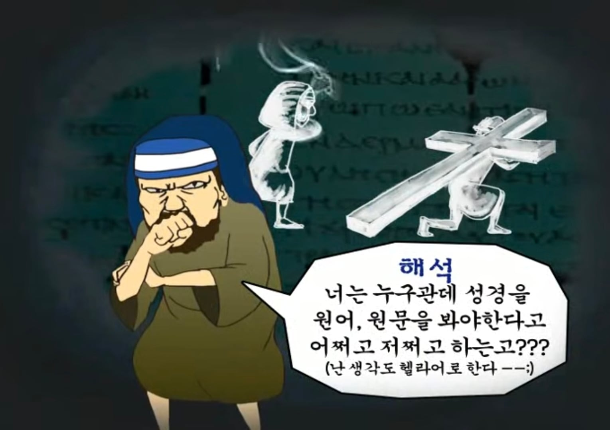

신천지에 관하여 조사하다가 본 한 웹 애니메이션인데....
휴학중이지만... 역사교육과 학생으로서 어이가 터지는게 뭐냐면...
역사학적으로 학문을 연구할려면 당대의 '사료'가 당연히 필요한데....
'원문으로 된 사료는 연구 목적으로도 읽을 필요가 없고 이후에 번역된 사료만 읽어도 충분하다' 이런 논리랑 비슷한 이야기라서
교수님께 귀싸대기 쳐맞을만한 소리임 ㅅㅂ...
+
참고로 해당 애니메이션은 '신학 연구 목적으로도 원문 성경을 읽을 필요가 없다'는 주장임 ㅇㅇ
(작성자는 천주교 예비신자임)

목사는 조용기 인가? ㅋㅋ;;